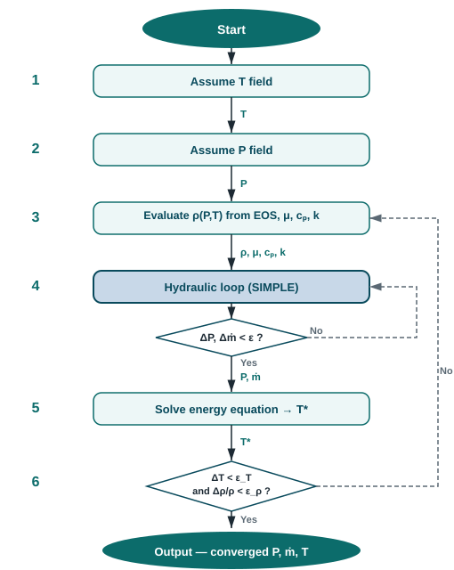

Gas networks with coupled pressure, density, and temperature.
The compressible solver couples three physics in a single outer loop:
the SIMPLE hydraulic solver
provides the pressure field and mass flows;
the equation of state evaluates density from the local $(P, T)$;
and the 1-D energy equation
updates the temperature field after each hydraulic solve.
The loop repeats until both density and temperature converge.
Applicability
Built for single-phase gas networks.
The compressible solver extends the isothermal hydraulic solver for cases
where the gas density varies with pressure along the network.
It is the right choice for natural gas distribution, compressed air,
and any single-component gas pipeline where the pressure ratio is large
enough that an incompressible assumption would introduce significant error.
Valid for
Steady-state flow of single-phase gases modelled
by an equation of state — ideal gas
($\rho = PM/RT$) or Peng–Robinson
($\rho = PM/ZRT$). Supports both isothermal networks and
non-isothermal networks with heat exchange and
fixed-temperature boundary conditions.
Not valid for
Two-phase flow or conditions near the critical
point where the EOS may return non-physical roots.
Transient flow and compositional (multi-component) mixtures
are planned for future releases.
Equation of state
Density from pressure and temperature.
Ideal gas
For a single-component ideal gas, the density at any point in
the network is:
Accurate when the reduced pressure $P_r = P/P_c \lesssim 0.1$.
Suitable for low- to moderate-pressure distribution networks
(natural gas at a few bar, compressed air, etc.).
Peng–Robinson (1976)
For high-pressure gas where the ideal-gas assumption introduces
significant error, the Peng–Robinson (PR) cubic EOS gives density
via the compressibility factor $Z$:
$$\rho = \frac{P M}{Z R T}$$
$Z$ is the largest real root of the cubic:
$$Z^3 - (1-B)\,Z^2 + (A - 3B^2 - 2B)\,Z - (AB - B^2 - B^3) = 0$$
The temperature-dependent attraction term is
$\alpha(T) = [1 + \kappa(1 - \sqrt{T/T_c})]^2$
with $\kappa = 0.37464 + 1.54226\,\omega - 0.26992\,\omega^2$.
The three fluid-specific parameters are the critical temperature
$T_c$ (K), critical pressure $P_c$ (Pa), and Pitzer acentric
factor $\omega$.
The vapour-phase root (largest real root greater than $B$) is
selected automatically. Use PR when $P_r \gtrsim 0.1$ or when
high accuracy is required across a wide pressure range.
Transport properties
Viscosity, specific heat, and thermal conductivity are supplied as
callables of $(P, T)$, following the standard non-compositional
practice where transport properties come from empirical
correlations rather than the EOS.
For ideal-gas conditions the pressure argument can be ignored;
for real-gas correlations such as Lee–Gonzalez–Eakin (viscosity)
the full $(P, T)$ dependence is used automatically.
The EquationOfState interface
Both EOS implementations share a single pluggable interface:
from angelica import IdealGasEOS, PengRobinsonEOS, CompressibleFluid
# Ideal gas — only M required
eos = IdealGasEOS(molecular_weight_kg_per_mol=0.016043)
# Peng–Robinson — M, Tc, Pc, ω
eos = PengRobinsonEOS(
molecular_weight_kg_per_mol=0.016043, # CH₄
critical_temperature_k=190.56,
critical_pressure_pa=4_599_200.0,
acentric_factor=0.01141,
)
fluid = CompressibleFluid.from_constants(eos=eos, viscosity_pa_s=1.1e-5, ...)
The local link pressure is taken as the arithmetic mean of the
inlet and outlet node pressures:
$P_{\text{link}} = \tfrac{1}{2}(P_{\text{in}} + P_{\text{out}})$.
Algorithm
Outer loop coupling hydraulics, density, and temperature.

The solver uses a segregated outer–inner structure.
The inner loop is the standard SIMPLE hydraulic solver.
The outer loop updates density and temperature in sequence,
repeating until both converge:
Snapshot current density $\rho^{\,n}$ on each link from
the EOS at the current $(P, T)$ field.
Run the SIMPLE hydraulic solver to convergence.
Within each SIMPLE iteration, $\rho(P, T)$ is re-evaluated
automatically as node pressures evolve.
If $\varepsilon_\rho < 10^{-4}$ and
$\varepsilon_T < 0.01\ \text{K}$ → converged.
Otherwise return to step 1.
For networks without heat exchange the energy equation is a no-op
and the solver behaves identically to the isothermal compressible
case — no special configuration is needed.
For non-isothermal networks, fixed-temperature boundary conditions
are applied at source and sink nodes (same interface as the
non-isothermal incompressible solver).
Why density depends on both $P$ and $T$
For an ideal gas, $\rho = PM/RT$.
As the energy equation updates $T$, density changes even if the
pressure field is unchanged — so a temperature update necessarily
triggers another hydraulic solve.
The outer loop captures this coupling: after each energy solve,
the updated $T$ feeds directly into $\rho(P, T)$ for the next
SIMPLE iteration, without any approximation.
Mass conservation in a compressible network
The SIMPLE solver enforces continuity at each node in terms of
mass flow — $\sum \dot{m} = 0$ at each internal node.
Because $\dot{m} = \rho \, Q$ and $\rho$ varies with both $P$ and $T$,
the volumetric flow rates differ across the network, but
mass is conserved within the convergence tolerance
of the hydraulic solver.
Validation
Physically consistent results.
Ideal gas density
For air at standard conditions (101 325 Pa, 20 °C,
$M = 0.028\,964\ \text{kg/mol}$), the solver returns
$\rho = 1.204\ \text{kg/m}^3$ — matching the analytical
ideal gas value within floating-point precision.
Doubling the pressure exactly doubles the density, consistent
with $\rho \propto P$.
Peng–Robinson low-pressure limit
For methane at 101 325 Pa and 20 °C
($T_c = 190.56\ \text{K}$, $P_c = 4.60\ \text{MPa}$,
$\omega = 0.0114$), the PR compressibility factor
$Z \approx 0.9976$ — within 0.25 % of the ideal-gas
limit, as expected at $P_r = 0.022$.
At 3 MPa ($P_r = 0.65$), $Z \approx 0.933$, giving
a density 7.2 % higher than the ideal-gas prediction.
Mass conservation at junctions
In a two-pipe series network at 300 kPa and 100 kPa,
the mass flow through both pipes agrees to within $10^{-4}$
relative error — confirming that the SIMPLE continuity
constraint is satisfied in mass terms even when volumetric
flow rates differ due to density variation.
Density gradient
The inlet node density is always greater than the outlet node
density when $P_{\text{in}} > P_{\text{out}}$ at uniform temperature,
consistent with $\rho \propto P$ for an ideal gas.
This is verified automatically in the test suite on every commit.
Thermal coupling
For networks without heat exchange the energy equation
produces $\Delta T \approx 0$ and the solver converges on the
first outer iteration — identical cost to the isothermal case.
When heat sources or ambient heat loss are present, both
$\varepsilon_\rho$ and $\varepsilon_T$ must fall below their
tolerances before the solve is declared converged.
Angelica is an open‑source project developed by
Simon Rodriguez,
Venezuelan engineer and researcher based in Dublin, Ireland.
For questions, suggestions, or bug reports — reach out directly.
For private consulting on pipeline network simulations — engineering studies, model setup,
or custom solver development — get in touch via
simonrodriguezgas@gmail.com
or LinkedIn.